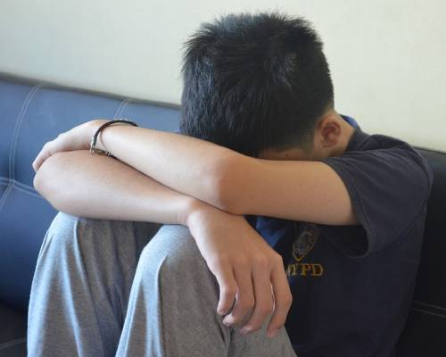

Línea de ayuda a la infancia
116 112
La Línea de Ayuda a la Infancia ofrece atención a niños, niñas y adolescentes que necesiten hablar sobre sus problemas o preocupaciones.

Con el fin de dar respuesta a la necesidad que tienen muchos niños, niñas y adolescentes de que se les escuche en sus problemas y dificultades diarias, disponemos de la Línea de Ayuda a la Infancia.
Ofrece una respuesta de fácil acceso, profesional e individual a sus problemas y preocupaciones todos los días del año, las 24 horas del día.
Es un servicio especializado de atención telefónica, al que podrán dirigirse niños, adolescentes y adultos para consultar cualquier tipo de problemática relacionada con menores.
A niños, adolescentes y adultos que necesiten consultar cualquier problemática relacionada con menores.
Número de teléfono gratuito: 116 112
En la Comunidad de Madrid, el órgano responsable del programa es la Dirección General de la Familia y el Menor.
Mediante este código QR podrá descargarse información de contacto en su teléfono móvil.